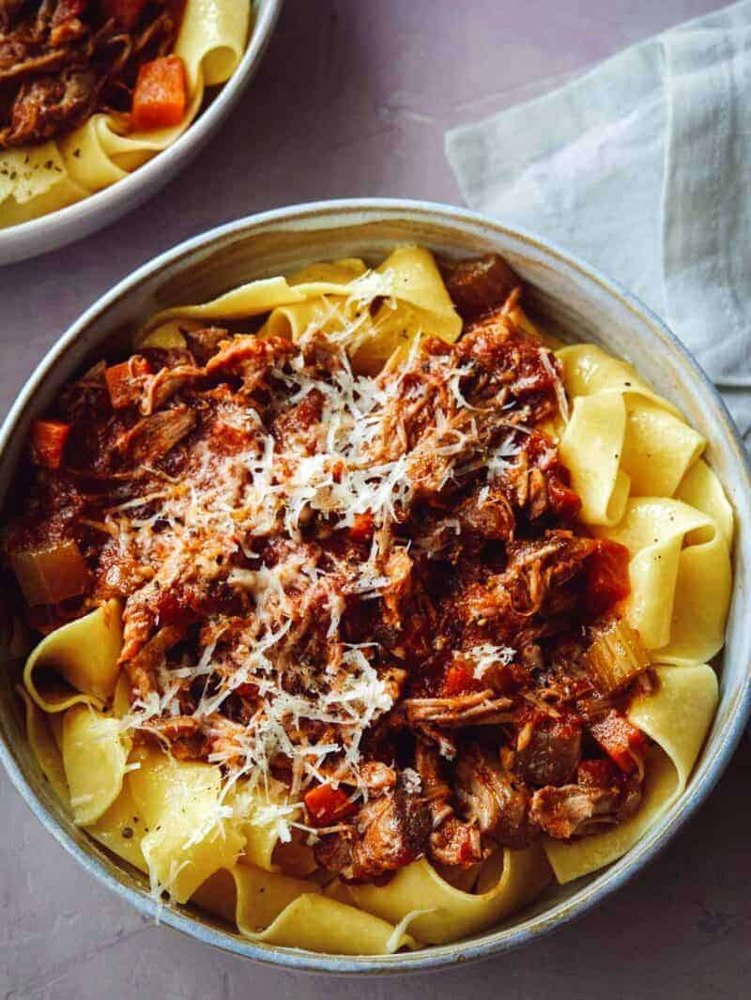

Braised Pork Ragu

I love this ragu recipe since it reminds me of my honeymoon to Italy with my wife.
Ingredients
- 2½ tbls oil
- 2 lbs boneless pork shoulder; fat trimmed
- ½ yellow onion; diced
- 2 Carrots; peeled and diced
- 2 celery stalks; trimmed and diced
- 2 garlic cloves; minced
- 1 tbls minced thyme leaves
- 2 tsp minced sage leaves
- 1 tsp minced rosemary
- 2 tbls tomato paste
- 1 cup dry red wine
- 1 can (28 oz) whole tomatoes
- Salt and pepper
- Pasta
Directions
- Preheat oven to 325°F
- Cut pork shoulder into four equal pieces
and season with salt and pepper
- Place dutch oven over medium-high heat.
Pour 1 tbls oil into dutch oven and sear pork for
3 to 4 minutes per side
- Remove pork and drain all fat from dutch oven.
Add remaining oil.
- Add onion, carrot, celery and saute for 4 to 5
minutes. Add garlic and season with salt and pepper.
- Add herbs and continue to saute for 3 to 4 minutes
- Add tomato paste and stir. Lightly season with salt and pepper
-
Deglaze pot with wine, scraping up all brown bits from bottom.
- Reduce heat to medium and simmer until ½ wine has evaporated
- Add whole tomatoes with juices
- Once mixture with simmering, add pork back into pot
and bring to a boil
- Cover pot and place on lowest shelf in oven
- Braise pork for about 2 hours, or until pork is tender
- Remove pot from oven and shred pork with two forks
- Cook pasta as desired and serve with ragu
Recipe Source: Spoon Fork Bacon
Home